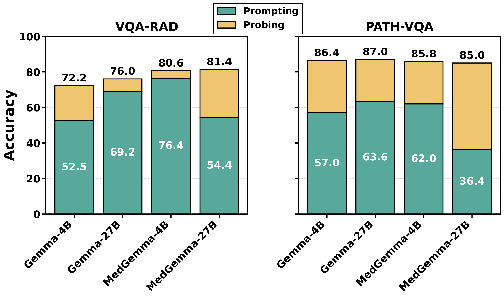

Results: Main Results
Prompting vs. MedProb
Across PATH-VQA, SLAKE, and VQA-RAD, MedProb recovers substantially more answer-relevant signal than prompting and outperforms agentic systems and many medical VLMs. The gap is especially large on PATH-VQA, where prompting often collapses while probing stays high.

Figure 3. Prompting vs. MedProb accuracy for general (Gemma-4B/27B) and medical (MedGemma-4B/27B) VLMs on VQA-RAD and PATH-VQA.
| Model | Method | PATH-VQA | SLAKE | VQA-RAD | Average | ||||
|---|---|---|---|---|---|---|---|---|---|
| F1 | Acc | F1 | Acc | F1 | Acc | F1 | Acc | ||
| MAM | Agentic | 51.85 | 51.80 | 39.92 | 59.51 | 39.31 | 59.31 | 39.62 | 56.87 |
| MMedAgent | Agentic | 36.11 | 37.00 | 28.30 | 43.13 | 59.80 | 58.17 | 41.40 | 46.10 |
| UCAgents | Agentic | 60.55 | 61.19 | 78.09 | 77.10 | 64.17 | 71.10 | 62.36 | 69.80 |
| HuatuoGPT-Vision-34B | Medical VLM | 60.61 | 61.80 | 77.89 | 76.86 | 83.57 | 75.66 | 74.02 | 71.44 |
| Aloe-Vision-72B-AR | Medical VLM | 67.70 | 69.20 | 86.80 | 80.24 | 75.73 | 79.46 | 76.74 | 76.30 |
| UniMedVL-14B | Medical VLM | 52.84 | 48.00 | 66.46 | 58.07 | 66.24 | 58.94 | 61.85 | 55.00 |
| MedVLM-R1-2B | Medical VLM† | 46.73 | 58.00 | 49.29 | 61.20 | 58.71 | 51.71 | 51.58 | 56.97 |
| InfiMed-RL-3B | Medical VLM† | 79.79 | 79.60 | 88.16 | 81.92 | 83.43 | 74.90 | 83.79 | 78.81 |
| MedMo-8B | Medical VLM† | 65.99 | 67.80 | 80.64 | 72.29 | 73.39 | 58.94 | 73.34 | 66.34 |
| Medix-R1-30B | Medical VLM† | 73.00 | 73.00 | 82.46 | 83.61 | 70.32 | 72.24 | 75.26 | 76.28 |
| InternVL3-1B | Prompting | 62.01 | 62.80 | 83.68 | 75.66 | 76.12 | 65.02 | 73.94 | 67.83 |
| InternVL3-1B | MedProb | 82.09 | 82.20 | 88.70 | 83.13 | 81.51 | 72.62 | 84.10 | 79.32 |
| Qwen3-VL-2B | Prompting | 55.78 | 56.80 | 68.73 | 77.83 | 64.72 | 64.64 | 63.08 | 66.42 |
| Qwen3-VL-2B | MedProb | 83.67 | 83.80 | 89.02 | 84.10 | 80.79 | 73.00 | 84.49 | 80.30 |
| Gemma-4B | Prompting | 53.94 | 57.00 | 68.93 | 61.69 | 57.96 | 52.47 | 60.28 | 57.05 |
| Gemma-4B | MedProb | 86.33 | 86.40 | 86.43 | 79.76 | 80.33 | 72.24 | 84.36 | 79.47 |
| Qwen3-VL-4B | Prompting | 59.88 | 54.60 | 86.03 | 77.35 | 46.24 | 67.30 | 64.05 | 66.42 |
| Qwen3-VL-4B | MedProb | 85.69 | 85.80 | 90.63 | 86.02 | 83.14 | 74.90 | 86.49 | 82.24 |
| Qwen3-VL-8B | Prompting | 58.98 | 58.60 | 70.36 | 76.63 | 46.25 | 69.58 | 58.53 | 68.27 |
| Qwen3-VL-8B | MedProb | 86.12 | 86.20 | 89.35 | 84.09 | 82.34 | 75.28 | 85.93 | 81.86 |
| Llama-3.2-11B-Vision | Prompting | 48.94 | 59.80 | 68.43 | 69.88 | 67.60 | 68.06 | 61.66 | 65.91 |
| Llama-3.2-11B-Vision | MedProb | 86.12 | 86.20 | 88.21 | 82.40 | 83.89 | 76.04 | 86.07 | 81.55 |
| Gemma-27B | Prompting | 61.18 | 62.00 | 73.12 | 75.42 | 69.56 | 69.58 | 67.95 | 69.00 |
| Gemma-27B | MedProb | 86.86 | 87.00 | 89.17 | 82.89 | 83.14 | 76.04 | 86.39 | 81.98 |
| Qwen3-VL-30B | Prompting | 63.23 | 61.20 | 88.04 | 80.96 | 74.53 | 77.95 | 75.27 | 73.37 |
| Qwen3-VL-30B | MedProb | 85.70 | 85.80 | 91.12 | 86.75 | 86.46 | 81.37 | 87.76 | 84.64 |
Table 1. Performance comparison on medical VQA benchmarks across PATH-VQA, SLAKE, and VQA-RAD. Bold: best per column; MedProb rows highlighted; † trained on PATH-VQA, VQA-RAD, and SLAKE.